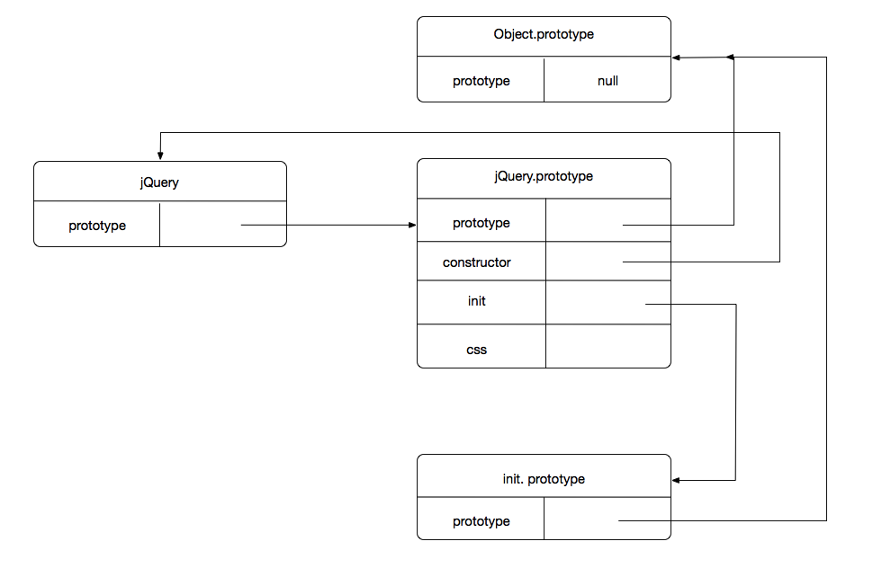
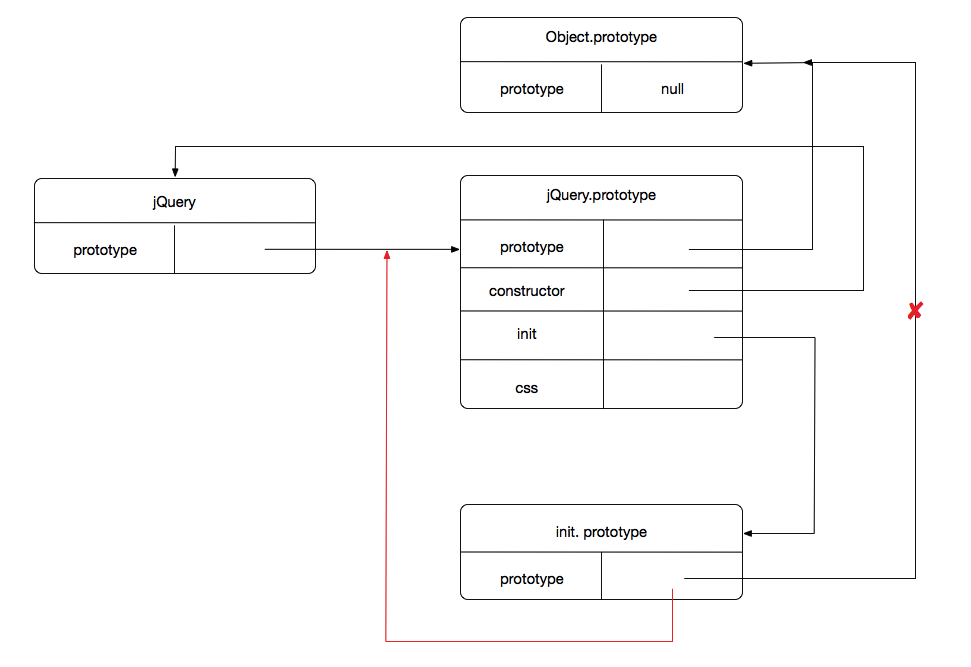

<!DOCTYPE html>
<html lang="en">
<head>
    <meta charset="UTF-8">
    <meta name="viewport" content="width=device-width, initial-scale=1.0">
    <meta http-equiv="X-UA-Compatible" content="ie=edge">
    <title>LinHao</title>
    <link href="https://cdn.bootcss.com/bootstrap/3.3.6/css/bootstrap.min.css" rel="stylesheet">
    <link href="https://cdn.bootcss.com/animate.css/3.5.0/animate.min.css" rel="stylesheet">
    <link rel="stylesheet" href="/css/style.css">
    <link rel="stylesheet" href="/css/index.css">
    <link rel="stylesheet" href="/css/zTreeStyle.css">
</head>
<body>
    
        <div id="sidebar_nav_mask" class="animated"></div>

<div id="sidebar_nav" class="animated">
    <div class="sidebar_nav_container">
        <div class="nav_header">
            <span class="nav_header_text AGaramondPro_Italic_Bold">Navigation</span>
        </div>
        <div class="nav_body">
            <!-- <ul class="nav_lists">
                <li class="list_item_copy list_item"></li>
            </ul> -->
            <div class="tree_nav clear">
                <ul id="tree_nav" class="ztree"></ul>
            </div>
        </div>
    </div>
</div>
    

    <div id="blog" class="PingFang_SC_Normal">
        <div id="header">
    <div class="header-container container">
        <div class="collapse navbar-collapse row" id="bs-example-navbar-collapse-1">
            <ul class="header-list nav navbar-nav col-md-6 col-sm-6 col-xs-6">
                
                    <li class="header-list-item"><a href="/">HOME</a></li>
                
                    <li class="header-list-item"><a href="/article">ARTICLE</a></li>
                
                    <li class="header-list-item"><a href="/about">ABOUT</a></li>
                
            </ul>
            
        </div>
        
        
            <div class="sidebar_nav_btn">
                <i class="iconfont icon-menu2"></i>
            </div>
        
    </div>
</div>
        <div id="header_scroll" >
    <div class="header_scroll_block"></div>
</div>
        
        <div id="main" class="clear">
            <div class="main-container container">
                

                

    

    <div id="title" class="title-post">
        <h3 class="title-container">
            <span class="title-text AGaramondPro_Italic_Bold">Straight Matter</span>
        </h3>
    </div>


<li class="article-item">
    <div class="article-container">
        
        <h3 class="article-title">jQuery源码分析（一）</h3>
        <div class="article-header">
            <div class="article-info">
                <i class="iconfont icon-xinxi"></i>
                <span class="article-info-categories article-info-item">
                    <span class="AGaramondPro_Bold article-info-title">Categories</span>
                    <a class="category-link" href="/categories/jQuery/">jQuery源码分析</a>
                </span>
                <span class="article-info-tags article-info-item">
                    <span class="AGaramondPro_Bold tags-info-title">Tags</span>
                    
                </span>
                <span class="article-info-item article-info-date AGaramondPro_Regular"><span>2018-03-13</span></span>
                <span class="article-info-item article-info-portrait clear">
                    
                    <span class="article-info-item article-info-username AGaramondPro_Bold">LinHao</span>
                </span>
                
            </div>
        </div>
        
            <div class="article-content article-text">
                <h2 id="jQuery-源码基本结构"><a href="#jQuery-源码基本结构" class="headerlink" title="jQuery 源码基本结构"></a>jQuery 源码基本结构</h2><ol>
<li><p>jQuery 采用 <strong>立即执行函数表达式</strong> 的方式，将所有的代码都放在其中，这样做可以有效的防止污染其他变变量。基本结构如下  </p>
<pre class="line-numbers">
<code class="language-javascript">
 (function ( window, undefined ) {

 })( window )
</code>
</pre>    
</li>
<li><p>可以看到，jQuery 将 <code>window</code> 对象作为实参传入，然后在内部通过形参 <code>window</code> 和 <code>undefined</code> 接受，这样做就会产生两个问题 </p>
<ul>
<li>为什么要将 <code>window</code> 作为实参传入，在函数中直接访问 <code>window</code> 不可以吗？<br>这样做的主要目的是优化，访问全局变量的速度要比访问局部变量的速度慢，因为访问全局变量时会从当前作用域一直向上查找，直到作用域链的最顶端，而局部变量就不同了，只会查找当前的作用域。<br>另一个好处就是代码的压缩，在压缩后，全局变量名无法被压缩为更短的变量名，而局部变量是可以被替换为更短的字符作为其变量名，例如上面的局部变量 <code>window</code> 在被压缩后可能会被替换为 <code>w</code></li>
<li>形参 <code>undefined</code> 变量的作用？<br>这样做的目的是兼容一些低版本的浏览器，在一些老版本的浏览器中（IE8以下），<code>undefined</code> 的值是可以被修改的<br><pre class="line-numbers"><br><code class="language-javascript"><br>  var undefined = 1;<br>  // 定义一个变量为 undefined，保存的值为 1。此时在低版本的浏览器中，undefined 的值就被修改为了 1，而不再是本身的 undefined 的值了<br></code><br></pre><br>所以，将形参 <code>undefined</code> 变量保存为 <code>undefined</code> 值，这样，就算在其他地方修改了 <code>undefined</code> 的值，也不会影响 <code>jQuery</code> 中 <code>undefined</code> 的值了  </li>
</ul>
</li>
</ol>
<h2 id="jQuery-基本变量"><a href="#jQuery-基本变量" class="headerlink" title="jQuery 基本变量"></a>jQuery 基本变量</h2><pre class="line-numbers">
<code class="language-javascript">
var
    // 该对象在后面会被初始化为 $( document )
    rootjQuery,

    // The deferred used on DOM ready
    readyList,

    /**
     *  保存 typeof undefined 的值，目的是兼容一些低版本的浏览器
     *  在一些低版本的 IE 中，如果有定义 var a; 并且直接用 a === undefined 判断，结果可能是 false，但是如果使用 typeof a === 'undefined' 来判断是不存在兼容性问题的
     */
    core_strundefined = typeof undefined,    

    /**
     *  将全局变量 location，document 和 documentElement 保存为局部变量的引用
     *  和前面一样，可以优化访问速度，有利于压缩
     */ 
    location = window.location,
    document = window.document,
    docElem = document.documentElement,

    /**
     *  以下两个变量专门用于解决多库共存，也就是 $ 符号被占用的问题（ 因为 $ 不仅仅在 jQuery 中被使用，还在其他的一些库中也会被使用 ），所以可以将 $ 和 jQuery 的控制权交出去
     *  这两个变量主要用在工具方法 noConflict 中，后面碰到在说
     */
    _jQuery = window.jQuery,
    _$ = window.$,

    /**
     *  这个变量在后面将各个数据类型以键值对的形式存储，用于工具方法 $.type 判断一个实例的数据类型。该变量最终将 Object、Array、String、Number、Boolean、Date、Function、Error、RegExp 这几种数据类型映射为如下的键值对
     *  {
     *      [object Object]:  'object',
     *      [object Array]:   'array',
     *      [object String]:  'string',
     *      // ...
     *  }
     */
    class2type = {},

    // 主要用在之后保存 Array 原型中一些方法的引用
    core_deletedIds = [],

    // 当前 jQuery 的版本号
    core_version = "2.0.3",

    // 保存一些常用方法的引用，可以优化访问速度和压缩
    core_concat     = core_deletedIds.concat,       // 数组的 concat 方法
    core_push       = core_deletedIds.push,         // 数组的 push 方法
    core_slice      = core_deletedIds.slice,        // 数组的 slice 方法
    core_indexOf    = core_deletedIds.indexOf,      // 数组的 indexOf 方法
    core_toString   = class2type.toString,          // Object 的 toString 方法
    core_hasOwn     = class2type.hasOwnProperty,    // Object hasOwnProperty 方法，的判断一个属性是否属于实例本身，不会从原型上去查找
    core_trim       = core_version.trim,            // 字符串的 trim 方法，用于去除首尾空格

    // 定义 jQuery 构造函数，后面会详细介绍
    jQuery = function( selector, context ) {
        return new jQuery.fn.init( selector, context, rootjQuery );
    },

    /**
     *  匹配数字的正则
     *      1.  最开始有零个或多个正负号
     *      2.  有零个或多个数字，并且还有一个小数点，或者什么都没有
     *      3.  最少有一个数字
     *      4.  有 e 或 E，并且有一个正负号，并且有最少一个数字，或者什么都没有（ 这条用于匹配科学计数法 ）
     *
     *  (?:exp) 这种断言方式，只会匹配 exp 的内容，而不会将匹配到的内容分组
     */
    core_pnum = /[+-]?(?:\d*\.|)\d+(?:[eE][+-]?\d+|)/.source,

    /**
     * 匹配所有的非空格字符
     */
    core_rnotwhite = /\S+/g,

    /**
     *  匹配 HTML 标签或者 id 选择器的正则
     *      1.  最开始有零个或多个空格
     *      2.  然后是一个形如 HTML 的标签，首尾含有 &lt; 和 &gt;，并且其中最少一个字符
     *      3.  然后还可能会有零个或多个非 &gt; 的字符
     *      4.  或者是 id 选择器：前面有一个 #，然后有零个或多个的 \w 或者 -
     */
    rquickExpr = /^(?:\s*(<[\w\w]+>)[^>]*|#([\w-]*))$/,

    /**
     * 匹配单独的 HTML 标签，其中没有内容
     *      以 &lt; 开头，最少一个 \w，紧跟零个或多个个空格，然后紧跟 /&gt;
     *      然后再跟 %lt/&gt，其中括号的内容就是前面 (\w+) 的内容，也有可能什么都不跟
     *      \1 \2 类似于这种正则，指的是：在整个正则表达式中，从左往右第 1 个、第 2 个 () 中的内容
     *      其中，\/? 中的 ? 是惰性模式，匹配到后取最少的个数为结果
     */
    rsingleTag = /^<(\w+)\s*\ ?="">(?:<\ \1="">|)$/,

    /**
     *     匹配不同浏览器下 CSS 样式的前缀
     *      在非 ie 浏览器下，例如 Chrome，它的前缀值 -webkit，此时，C3 的属性 -webkit-transition 会转换为 webkitTransition
     *      在 ie 浏览器下，它的前缀是 —ms，C3 的前缀 -ms-transition 会转换为 MsTransition
     *      可以看到，ie 浏览器不仅会转驼峰写法，还会将首字母大写，而非 ie 浏览器则不会
     *     rdashAlpha 用于匹配类似于 -size、-2d、-3d 这样的形式
     */
    rmsPrefix = /^-ms-/,
    rdashAlpha = /-([\da-z])/gi,

    /**
     *     将 CSS 中含有 - 的样式名转换为驼峰的回调
     *     @param { String } all      rdashAlpha 正则匹配到的部分，例如 margin-left 就是 -l
     *     @param { String } letter all 的部分中，第一个子项，也就是 - 后面的字符
     */
    fcamelCase = function( all, letter ) {
        // 将 letter 转成大写，并返回以替代 all
        return letter.toUpperCase();
    },

    // DOM 加载完之后的回调
    // The ready event handler and self cleanup method
    completed = function() {
        document.removeEventListener( "DOMContentLoaded", completed, false );
        window.removeEventListener( "load", completed, false );
        jQuery.ready();
    };
</\></(\w+)\s*\></[\w\w]+></code>
</pre>

<h2 id="jQuery-构造函数"><a href="#jQuery-构造函数" class="headerlink" title="jQuery 构造函数"></a>jQuery 构造函数</h2><ol>
<li>在了解 <code>jQuery</code> 的构造函数之前，先来看普通面向对象的写法    </li>
</ol>
<pre class="line-numbers">
<code class="language-javascript">
// 定义构造函数
function jQuery () {}
// 在原型中定义方法
jQuery.prototype.init = function () {}
jQuery.prototype.css  = function () {}
// 实例化
let instance = new jQuery();
// 初始化
instance.init();
// 初始化后调用一系列的方法
instance.css();
</code>
</pre>    

<p>这只普通面向对象的写法，经过 <code>new</code> 实例化后，再调用 <code>init</code> 方法进行初始化，之后就可以调用各种方法进行不同的操作了，但是在 <code>jQuery</code> 中并没有这么繁琐的步骤，我们通常都是直接调用方法的，例如 <code>jQuery().css()</code> 这种形式，之所以使这种形式，是因为 <code>jQuery</code> 采用了无 <code>new</code> 的初始化，方便我们使用，<code>jQuery</code> 的无 <code>new</code> 就体现在下面的代码   </p>
<pre class="line-numbers">
<code class="language-javascript">
// 定义构造函数
function jQuery () {
    return new jQuery.prototype.init();
}
jQuery.prototype.init = function () {}
jQuery.prototype.css  = function () {}

// 调用一系列的方法
jQuery().css()
</code>
</pre>  

<p>现在，<code>jQuery</code> 方法返回的是一个已经初始化好的实例对象了，此时，就可以直接在其后面调用其他方法  </p>
<pre class="line-numbers">
<code class="language-javascript">
jQuery = function( selector, context ) {
    return new jQuery.fn.init( selector, context, rootjQuery );
}
</code>
</pre>

<p>从源码可以看到，<code>jQuery</code> 构造函数确实返回的是一个经过 <code>new</code> 实例化并且初始化后的实例对象，其中，<code>jQuery.fn</code> 就是 <code>jQuery</code> 构造函数的原型</p>
<p><strong>现在会有一个问题：</strong>既然 <code>jQuery</code> 构造函数返回的是 <code>jQuery.fn.init</code> 函数的实例，而所有的方法又是定义在 <code>jQuery</code> 原型中的，那么这个实例是怎么找到在 <code>jQuery</code> 原型中的一系列方法的？例如，<code>jQuery().css()</code> 中，<code>css</code> 方法是定义在 <code>jQuery</code> 原型中的，而 <code>jQuery()</code> 其实是 <code>jQuery.fn.init</code> 构造函数的实例  </p>
<p></p>
<p>按照正常情况，<code>jQuery()</code> 是 <code>init</code> 方法的实例，只能从 <code>init</code> 的原型中寻找方法，但是现在它却可以去 <code>jQuery</code> 的原型中寻找，根本原因在于源码中 283 行的一句代码  </p>
<pre class="line-numbers">
<code class="language-javascript">
jQuery.fn.init.prototype = jQuery.fn;
</code>
</pre>  

<p>这句代码将 <code>jQuery</code> 中 <code>init</code> 构造方法的原型指向了 <code>jQuery</code> 的原型，此时，上面的图应该改为下面这张<br>    </p>
<p><strong>现在，<code>init</code> 的原型就指向了 <code>jQuery</code> 的原型，所以访问一个方法时，就会从 <code>jQuery</code> 的原型中去寻找</strong></p>
<h2 id="jQuery-prototype"><a href="#jQuery-prototype" class="headerlink" title="jQuery.prototype"></a>jQuery.prototype</h2><p>前面说过，<code>jQuery.fn</code> 就是 <code>jQuery</code> 的原型，是因为源码中将 <code>jQuery.fn</code> 指向了 <code>jQuery.prototype</code>，<code>jQuery.ptototype</code> 源码大致如下     </p>
<h3 id="jQuery-prototype-init"><a href="#jQuery-prototype-init" class="headerlink" title="jQuery.prototype.init"></a>jQuery.prototype.init</h3><p>该方法是 <code>jQuery</code> 的核心方法，通过这个方法就可以生成一个 <code>jQuery</code> 对象<br>它接受三个参数<br>第一个参数是选择器，可以是字符串形式的 CSS 选择器，可以是 DOM 对象，也可以是函数</p>
<p><code>init</code> 方法的结构大致分为</p>
<ol>
<li>处理选择器不为以下任何一个</li>
<li>处理选择器为字符串</li>
<li>处理选择器为 DOM 对象</li>
<li>处理选择器为函数   </li>
</ol>
<pre class="line-numbers">
<code class="language-javascript">
/**
 * @param { String | Object | Function } selector    选择器，可能是字符串、DOM、函数
 * @param { Object }                     context     上下文，可能是 document、属性对象
 * @param { Object }                     rootjQuery  jQ 对象，该对象默认被初始化为 $(document)
 */
init: function( selector, context, rootjQuery ) {
    var match, elem;

    /**
     * 第一部分
     * 排除选择器为 空字符串、null、undefined、false 这些情况，此时会返回 jQuery.prototype
     */
    if ( !selector ) {
        return this;
    }

    /**
     * 第二部分
     * 判断选择器是否是字符串
     */
    if ( typeof selector === "string" ) {
        /**
         * 2.1 判断选择器的首尾是否是 <> 并且选择器的长度最少要 3 个字符，即最少也要是 &lt;a&gt; 这样的形式
         *     这种情况是为了创建 HTML 标签
         *     如果满足这个条件，将 match 赋值一个新的数组，将第 1 个元素的值赋为 selector，第 0 个和第 2 个赋值为 null，这是模拟正则 exec 的返回值
         */
        if ( selector.charAt(0) === "&lt;" && selector.charAt( selector.length - 1 ) === "&gt;" && selector.length &gt;= 3 ) {
            match = [ null, selector, null ];
        } 

        /**
         * 2.2 如果没有 2.1 的情况，那就不是创建 HTML 标签，此时会有以下几种情况：CSS 选择器、单标签带内容，例如
         *     $('.box') $('#box') $('#box li') $('div') 
         *     $('&lt;input /&gt;hello') 这种情况和 $('&lt;input /&gt;') 是一模一样的
         *     此时，这几种情况用 rquickExpr 正则匹配，这个正则匹配的就是 HTML 标签和 CSS 的 id 选择器，如果 selector 中不含有 id 选择器 和 HTML 标签，那么 match 就是 null
         *     如果含有 id 选择器，那么 match 就类似于这种形式：[ '#box', null, 'box' ]
         *     如果含有 HTML 元素，那么 match 就类似于这种形式：[ '&lt;input&gt;OK', '&lt;input&gt;', null ]
         */
        else {
            match = rquickExpr.exec( selector );
        }

        /**
         *  2.3 判断 match 的值
         *      match 为 null：只有当 selector 中匹配不到 rquickExpr 正则的时候，既 selector 不是 HTML 标签也不是 id 选择器
         *      match 不为 null：当 selector 是 HTML 标签或者 id 选择器
         *      match[1] 为 true：只有 selector 是一个 HTML 标签，即新创建 HTML 标签
         *      match[1] 为 false： selector 是一个 id 选择器
         */
        if ( match && (match[1] || !context) ) {
            /**
             *  2.3.1 
             *  如果 selector 中是 HTML 标签，则进入 if
             *  此时 match 的内容形如 [ '&lt;div&gt;', '&lt;div&gt;', null ]
             */
            if ( match[1] ) {
                /**
                 * 2.3.1.1 
                 * 判断 context 是否是 jQ 对象，如果是，取出索引为 0 的 DOM 元素；如果不是，直接使用
                 * 在创建新的 HTML 元素时，可以为其指定一个 document，这样，可以在不同的 document 下创建标签，常用在 iframe 下
                 */
                context = context instanceof jQuery ? context[0] : context;

                /**
                 * 2.3.1.2
                 * 将 HTML 标签转换为数组，然后通过 jQuery.merge 方法与当前 jQ 对象合并
                 */
                jQuery.merge( this, jQuery.parseHTML(
                    match[1],
                    context && context.nodeType ? context.ownerDocument || context : document,
                    true
                ) );

                /**
                 * 2.3.1.3
                 * 处理创建标签时附加的属性，例如 ('&lt;li&gt;', { class: 'box' })
                 *     判断 HTML 标签是否是一个空标签并且 context 是否是字面量对象（ 即使用 {} 或者 new Object() 创建的对象 ）
                 */
                if ( rsingleTag.test( match[1] ) && jQuery.isPlainObject( context ) ) {
                    // 2.3.1 遍历属性对象
                    for ( match in context ) {
                        /**
                         * 如果满足上面的条件，就遍历 context 对象
                         *     如果当前属性存在对应的方法，就调用该方法进行设置，jQuery.isFunction 方法用于判断参数是否是一个函数
                         *     如果不存在对应的方法，就调用 attr 方法设置属性
                         *     例如：$(&lt;li&gt;', { html: 'test', title: '标题' })
                         *         设置 html 时，调用 this.html() 方法设置
                         *         设置 title 时，调用 this.attr() 方法设置
                         */
                        if ( jQuery.isFunction( this[ match ] ) ) {
                            this[ match ]( context[ match ] );
                        } else {
                            this.attr( match, context[ match ] );
                        }
                    }
                }

                /**
                 * 2.3.1.4 返回当前的 jQ 对象
                 */
                return this;
            } 

            /**
             *  2.3.2 如果 selector 中不是 HTML 标签，而是 id 选择器，则进入 else
             */
            else {
                /**
                 * 2.3.2.1 
                 *     根据 id 获取到 DOM 元素
                 *     此时 match 的 形式就如 [ '#div', undefined, 'div' ] 这样，match[2] 就是 id
                 */
                elem = document.getElementById( match[2] );

                /**
                 * 2.3.2.2 
                 *     判断根据 id 取到的 DOM 元素是否存在
                 *     之所以还要判断 elem 的父节点是否存在，是因为，在黑莓 4.6 以下的浏览器中，判断一个 DOM 元素是否存在，仅仅判断其本身是否存在是不够的，可能会出现 DOM 节点不存在页面中，但是还是可以获取到其值的这种情况
                 *     所以，不仅需要判断 elem 是否存在，还需要判断它的父节点是否存在；如果一个元素在页面上，必然会有父节点
                 */
                if ( elem && elem.parentNode ) {
                    /**
                     * 如果该 DOM 元素确实存在，就将当前 jQ 对象的 length 设置为 1，第 0 属性的值设置为该 DOM 对象
                     * 并且将当前 jQ 对象的第 0 属性的值设置为该 DOM 对象
                     */
                    this.length = 1;
                    this[0] = elem;
                }

                /**
                 * 2.3.2.3
                 * 将当前 jQ 对象的 context 属性设置为 document
                 * 将当前 jQ 对象的 selector 属性设置为参数选择器
                 */
                this.context = document;
                this.selector = selector;

                /**
                 * 2.3.2.4
                 * 返回当前的 jQ 对象
                 */
                return this;
            }

        } 

        /**
         *  2.4 如果不是 HTML 标签或者 id 选择器，那么只能是 CSS 选择器，再判断是否提供了 context 参数
         *      如果没有提供 context，进入 else if，调用 find() 进行选择元素
         *      如果有，再判断其是否是 jQ 对象
         *            如果是 jQ 对象，进入 else if，调用 find() 进行选择元素
         *            如果不是，进入 else，调用 find() 进行选择元素
         *             
         *      else if 和 else 做的是相同的事，都是通过 find 方法来查询 selector
         *      如果没有提供 context，就从 $(document) 中查找，如果有，再将其转换为 jQ 对象（ 如果本来就是 jQ 对象就不用转换 ），再从指定的 context 中查找
         */
        else if ( !context || context.jquery ) {
            return ( context || rootjQuery ).find( selector );
        } else {
            return this.constructor( context ).find( selector );
        }
    } 

    /**
     * 第三部分
     * 处理 selector 为 DOM 元素，类似于 $(document)
     *       如果选择器中含有 nodeType 属性，就说明是 DOM 节点
     *           元素节点  -> 1
     *           文本节点  -> 3
     *           document -> 9
     */
    else if ( selector.nodeType ) {
        /**
         * 如果 selector 是 DOM 元素的话，就将当前 jQ 对象的 0 属性设置为该 DOM 元素并且将当前 jQ 对象的 length 设置为 1
         * 节点也不存在上下文，所以上下文就是自身
         * 最后直接返回当前 jQ 对象
         */
        this.context = this[0] = selector;
        this.length = 1;
        return this;
    } 

    /**
     * 第四部分
     * 处理 selector 为函数
     *      当 selector 为函数时，实际上该函数就是当前页面所有 DOM 节点加载完的回调
     * 
     *      jQ 中所有 DOM 节点加载完的回调有以下几种形式
     *      $(document).ready( function () {} )
     *      $().ready( function () {} )
     *      $( function () {} )     这种写法就是处理 selector 为函数时的写法，此时，会将其转换为 $(document).ready( selector )，和第一种是一样的
     */
    else if ( jQuery.isFunction( selector ) ) {
        return rootjQuery.ready( selector );
    }

    /**
     * 第五部分
     * 处理 selector 为 jQ 对象
     *     判断其是否含有 selector 属性，如果有（ 就是 jQ 对象 ），则进入 if
     *     可能会有这样的写法：$( $('#div') )，此时 selector 就是 jQ 对象，含有 selector 属性
     */
    if ( selector.selector !== undefined ) {
        /**
         *  将 selector jQ 对象的 selector 属性赋给当前 jQ 对象的 selector 属性
         *  将 selector jQ 对象的 context  属性赋给当前 jQ 对象的 context 属性
         */
        this.selector = selector.selector;
        this.context  = selector.context;
    }

    /**
     *  如果 selector 是 HTML 标签、CSS 选择器、 DOM 节点或者函数，那么在之前就会 return 出去，不会执行到这一句
     *  如果 selector 除了以上几种情况外，就会执行到这一句，通过 jQuery.makeArray 方法
     *     makeArray 方法，该方法接受一个参数时，将参数转换为 数组，接受两个参数时，将参数合并为一个 json 对象
     *     所以此时，如果 selector 只是 对象或数组，就将 selector 与 当前 jQ 对象合并
     */
    return jQuery.makeArray( selector, this );
}
</code>
</pre>  

<h3 id="jQuery-fn-selector"><a href="#jQuery-fn-selector" class="headerlink" title="jQuery.fn.selector"></a>jQuery.fn.selector</h3><p>保存的是当前 <code>jQuery</code> 对象的选择器字符串，默认为空  </p>
<pre class="line-numbers">
<code class="language-javascript">  
selector: ""
</code>
</pre>   

<h3 id="jQuery-fn-length"><a href="#jQuery-fn-length" class="headerlink" title="jQuery.fn.length"></a>jQuery.fn.length</h3><p>当前 <code>jQuery</code> 对象的长度属性，即当前 <code>jQuery</code> 对象中 DOM 元素的个数，默认是 0  </p>
<pre class="line-numbers">
<code class="language-javascript">  
length: 0
</code>
</pre>   

<h3 id="jQuery-fn-toArray"><a href="#jQuery-fn-toArray" class="headerlink" title="jQuery.fn.toArray"></a>jQuery.fn.toArray</h3><p>将当前的 <code>jQuery</code> 对象转换为数组( <code>jQuery</code> 对象实际是一个类数组对象 )</p>
<pre class="line-numbers">
<code class="language-javascript">  
toArray: function() {
    /**
     *  实际上是通过 Array.prototype.slice 方法将类数组转换为数组的
     */
    return core_slice.call( this );
}
</code>
</pre>    

<h3 id="jQuery-fn-get"><a href="#jQuery-fn-get" class="headerlink" title="jQuery.fn.get"></a>jQuery.fn.get</h3><p>获取当前 <code>jQuery</code> 对象中索引为 num 的 DOM 元素</p>
<pre class="line-numbers">
<code class="language-javascript">  
/**
 *  获取当前 jQ 对象中索引为 num 的 DOM 元素
 *  @param  { Number }    num    指定索引，可正可负，如果是负数，则从最后一个获取，即 -1 代表最后一个，-2 代表倒数第二个
 *  @return { Element }          指定的 DOM 元素
 */
get: function ( num ) {
    // 1. 判断是否提供了 num 参数
    return num == null 
        // 1.1 如果没传递 num，则将当前的 jQ 对象转换为数组并返回
        ? this.toArray() 
        /**
         * 1.2 如果传递了 num，则根据 num 值返回指定的原生 DOM 元素
         *     此时会判断 num 是正数还是负数
         *         如果是正数，则直接获取 num 对应的 DOM 元素
         *         如果是负数，则从尾部开始获取 num 对应的索引值，-1 代表最后一个，-2 代表倒数第二个；通过 legnth + num（负数）来获取索引
         */
        : ( num < 0 ? this[ this.length + num ] : this[ num ] );
}
</code>
</pre>    

<h3 id="jQuery-fn-each"><a href="#jQuery-fn-each" class="headerlink" title="jQuery.fn.each"></a>jQuery.fn.each</h3><p>该方法用于遍历一个对象或者数组，并且会为遍历到的每个元素执行一个指定的回调</p>
<pre class="line-numbers">
<code class="language-javascript">  
/**
 *  遍历当前 jQ 对象每个 DOM 元素
 *  @param  { Function }    callback    每个 DOM 元素执行的回调
 *  @param  { Object }      args        参数
 */
each: function( callback, args ) {
    /**
     *  实例方法 each 实际上调用的是工具方法 $.each
     */
    return jQuery.each( this, callback, args );
}
</code>
</pre>  

<h3 id="jQuery-fn-ready"><a href="#jQuery-fn-ready" class="headerlink" title="jQuery.fn.ready"></a>jQuery.fn.ready</h3><p>该方法用于遍历一个对象或者数组，并且会为遍历到的每个元素执行一个指定的回调</p>
<pre class="line-numbers">
<code class="language-javascript">  
/**
 *  DOM 加载
 *  @param { Function }    fn    DOM 元素加载完的回调
 */
ready: function( fn ) {
    // Add the callback
    jQuery.ready.promise().done( fn );

    return this;
}
</code>
</pre>   

<h3 id="jQuery-fn-pushStack"><a href="#jQuery-fn-pushStack" class="headerlink" title="jQuery.fn.pushStack"></a>jQuery.fn.pushStack</h3><pre class="line-numbers">
<code class="language-javascript">  
/**
 *  jQuery 对象模拟栈操作
 *  @param  { jQuery | Object | Array }  elems  待入栈的元素，可以是 jQ 对象或者是数组/类数组
 */
pushStack: function ( elems ) {
    /**
     *  1.  通过工具方法 merge 将 elems 合并到一个新的 jQuery 对象中，将 elems 中的每个元素添加到新的 jQuery 对象中
     *      合并后返回这个新的 jQuery 对象并将其引用保存在 ret 中
     */
    var ret = jQuery.merge( this.constructor(), elems );

    /**
     *  2.  将调用当前 pushStack 方法的 jQuery 对象的引用保存在 ret 的 prevObject 属性中
     */ 
    ret.prevObject = this;

    /**
     *  3.  设置 ret 的作用域 context 和调用当前 pushStack 方法的 jQuery 对象的作用域 context 一样
     */
    ret.context = this.context;

    // 4. 返回 ret 保存的 jQuery 实例
    return ret;
}
</code>
</pre>

<h3 id="jQuery-fn-slice"><a href="#jQuery-fn-slice" class="headerlink" title="jQuery.fn.slice"></a>jQuery.fn.slice</h3><p>该方法用于截取 <code>jQuery</code> 对象中的部分属性</p>
<pre class="line-numbers">
<code class="language-javascript">  
/**
 *  截取 jQ 对象的部分属性
 *  该方法将截取当前对象的部分转换为数组，在通过 pushStack 方法压入栈中，最终返回截取出的 jQ 对象
 *  @param  { Number }    起始位置
 *  @param  { Number }    结束位置（ 如果不提供，则截取至结尾 ）
 */
slice: function() {
    return this.pushStack( core_slice.apply( this, arguments ) );
}
</code>
</pre>   

<h4 id="示例一：slice-的用法"><a href="#示例一：slice-的用法" class="headerlink" title="示例一：slice 的用法"></a>示例一：slice 的用法</h4><pre class="line-numbers">
<code class="language-markup">  
&lt;div class="box" id="box1"&gt;&lt;/div&gt;
&lt;div class="box" id="box2"&gt;&lt;/div&gt;
&lt;div class="box" id="box3"&gt;&lt;/div&gt;
&lt;div class="box" id="box4"&gt;&lt;/div&gt;
</code>
</pre>
<pre class="line-numbers">
<code class="language-javascript">  
/**
 *  在 slice 方法中
 *      首先将当前的 jQuery 对象转换为一个数组，然后根据参数的范围截取数组（ 此例中是 0 和 2，所以会截取第一个和第二个元素 ），然后将截取后的数组作为参数，调用 pushStack 方法
 *  在 pushStack 方法中
 *      将截取后的数组的每个元素合并到一个新的 jQuery 对象中，并用 ret 保存这个新的 jQuery 对象的引用（ 此时，这个 jQuery 对象中只有两个元素，就是第一个 div 和 第二个 div ）
 *      将新的 jQuery 对象的 prevObject 属性保存为当前的 jQuery 对象的引用，并将新的 jQuery 对象的作用域 context 属性保存为当前 jQuery 对象的作用域 
 *      最后返回新的 jQuery 对象
 *      所以 res 是一个保存两个 div 的 jQuery 对象，并且它的 prevObject 属性就是 $('.box')
 */
let res = $( '.box' ).slice( 0, 2 );
</code>
</pre> 

<h3 id="jQuery-fn-first"><a href="#jQuery-fn-first" class="headerlink" title="jQuery.fn.first"></a>jQuery.fn.first</h3><p>该方法用于获取 <code>jQuery</code> 对象中的第一个 DOM 元素</p>
<pre class="line-numbers">
<code class="language-javascript">  
/**
 *  获取当前 jQ 对象的第一个 DOM 元素，即索引为 0 的元素
 *  @return { Element }    获取到的 DOM 元素
 */
first: function() {
    /**
     *  该方法内部通过实例方法 eq 实现，所以返回的是位于栈顶索引为 0 的元素
     */
    return this.eq( 0 );
}
</code>
</pre>  

<h3 id="jQuery-fn-last"><a href="#jQuery-fn-last" class="headerlink" title="jQuery.fn.last"></a>jQuery.fn.last</h3><p>该方法用于获取 <code>jQuery</code> 对象中的最后一个 DOM 元素</p>
<pre class="line-numbers">
<code class="language-javascript">  
/**
 *  获取当前 jQ 对象的最后一个 DOM 元素，即 length - 1 的元素
 *  @return { Element }    获取到的 DOM 元素
 */
last: function() {
    /**
     *  该方法内部通过实例方法 eq 实现，所以返回的是位于栈顶索引为 length-1（ -1 ） 的元素
     */
    return this.eq( -1 );
}
</code>
</pre>  

<h3 id="jQuery-fn-eq"><a href="#jQuery-fn-eq" class="headerlink" title="jQuery.fn.eq"></a>jQuery.fn.eq</h3><p>该方法根据指定的索引获取当前 <code>jQuery</code> 对象中的以该索引为属性的 DOM 元素</p>
<pre class="line-numbers">
<code class="language-javascript">  
/**
 *  根据索引 i 获取当前 jQ 对象的 DOM 元素
 *  @param  { Number | String }    i    索引值，可正可负，也可为字符串数字
 *  @return { Element }                 该索引对应的 DOM 元素
 */
eq: function( i ) {
    /**
     *  1.  判断索引 i 是大于 0 还是小于 0，如果是大于 0，那么将索引 i + 0，即不变
     *      如果是小于 0，那么将素索引 i + length，就能获得正负数下对应的索引
     */
    var len = this.length,
        j = +i + ( i < 0 ? len : 0 );

    // 2. 判断索引 j 是否在 0 到 长度之间，如果满足，则将当前 jQ 对象中索引为 j 的属性值入栈；否则将一个空数组入栈
    return this.pushStack( j >= 0 && j < len ? [ this[j] ] : [] );
}
</code>
</pre>   

<h4 id="示例一：eq-方法提供正数"><a href="#示例一：eq-方法提供正数" class="headerlink" title="示例一：eq 方法提供正数"></a>示例一：eq 方法提供正数</h4><pre class="line-numbers">
<code class="language-markup">  
&lt;div class="box" id="box1"&gt;&lt;/div&gt;
&lt;div class="box" id="box2"&gt;&lt;/div&gt;
&lt;div class="box" id="box3"&gt;&lt;/div&gt;
&lt;div class="box" id="box4"&gt;&lt;/div&gt;
</code>
</pre>
<pre class="line-numbers">
<code class="language-javascript">  
/**
 *  在 eq 方法中，因为索引 i 是 0，所以 j 就是 0，然后判断 j 是否在 0 到当前 jQuery 对象的长度之间，此例中满足该条件
 *      然后取出第 0 个属性，并放到数组中，调用 pushStack 方法
 *  在 pushStack 方法中
 *      将上面取出的元素合并到一个新的 jQuery 对象中，并用 ret 保存其引用
 *      再将新的 jQuery 对象的 prevObject 和作用域 context 属性保存为当前 jQuery 对象的引用和作用域 context
 *      最后返回新的 jQuery 对象 ret
 *  所以，res 保存的是一个只含第一个 div 的 jQuery 对象，并且它的 prevObject 属性是 $('.box')
 */
let res = $('.box').eq(0);
</code>
</pre>  

<h4 id="示例一：eq-方法提供负数"><a href="#示例一：eq-方法提供负数" class="headerlink" title="示例一：eq 方法提供负数"></a>示例一：eq 方法提供负数</h4><pre class="line-numbers">
<code class="language-markup">  
&lt;div class="box" id="box1"&gt;&lt;/div&gt;
&lt;div class="box" id="box2"&gt;&lt;/div&gt;
&lt;div class="box" id="box3"&gt;&lt;/div&gt;
&lt;div class="box" id="box4"&gt;&lt;/div&gt;
</code>
</pre>
<pre class="line-numbers">
<code class="language-javascript">  
/**
 *  在 eq 方法中，因为索引 i 是 -2，所以 j 就是 -2 再加上长度，即 2，然后判断 j 是否在 0 到当前 jQuery 对象的长度之间，此例中满足该条件
 *      然后取出第 2 个属性，并放到数组中，调用 pushStack 方法
 *  在 pushStack 方法中
 *      将上面取出的元素合并到一个新的 jQuery 对象中，并用 ret 保存其引用
 *      再将新的 jQuery 对象的 prevObject 和作用域 context 属性保存为当前 jQuery 对象的引用和作用域 context
 *      最后返回新的 jQuery 对象 ret
 *  所以，res 保存的是一个只含倒数第二个 div 的 jQuery 对象，并且它的 prevObject 属性是 $('.box')
 */
let res = $('.box').eq(-2);
</code>
</pre> 


            </div>
        
        
        
    </div>

    
        
    <div id="post-nav" class="row">
        
        <div class="nav-prev col-md-4 col-sm-4 col-xs-6">
            
                <a href="/jQuery/jQuery02.html" class="nav-prev-link nav-link ellipsis">
                    <i class="iconfont icon-houtui"></i>
                    jQuery源码分析（二）
                </a>
            
        </div>

        <div class="nav-next col-md-4 col-md-offset-4 col-sm-4 col-sm-offset-4 col-xs-6">
            
                <a href="/jQuery/demo/demo.html" class="nav-next-link nav-link ellipsis">
                    demo
                </a>
                <i class="iconfont icon-qianjin"></i>
            
        </div>
        
    </div>

    

</li>
                
                
            </div>
        </div>
        
        

        <script src="/js/jquery-2.0.3.min.js"></script>
        <script src="/js/jquery.ztree.core.min.js"></script>
        <script src="/js/index.js"></script>
        <script src="/js/prism.js"></script>

    </div>
</body>
</html>